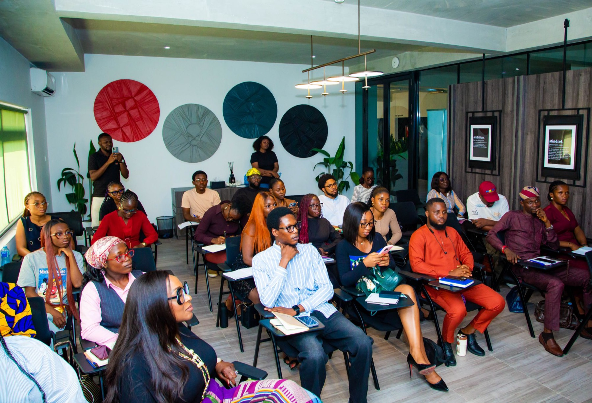

Programmes
Capability, built deliberately.
SKOT Programmes brings together our learning, talent development and capability-building platforms — for emerging talent, established professionals and the organisations they serve.
Register interestFree six-week PR Foundation Course
SKOT Impact Academy
Build a strong foundation in PR and communications.
6 weeks
Duration
In-person
Format
Free
Based on eligibility
Certificate
Of participation on completion

Training for professionals and teams
SKOT Elevate
Executive capability building for professionals, entrepreneurs and teams.
Workshops
tailored workshops and organisational training
Hybrid
virtual sessions and hybrid programmes
Coaching
executive coaching and retainer-based capacity development

Why we run them
The communications talent gap is a reputation risk — for every organisation in the market.
Our programmes exist to close it: practical, accessible, industry-relevant learning that gives emerging African communications professionals the skills and the network to practise at a higher standard, and gives organisations teams that can hold their own when it matters.